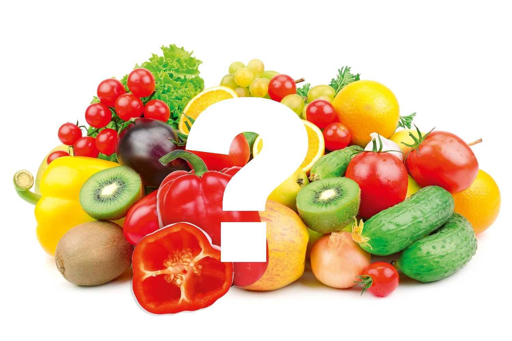

Zdrowe żywienie dla serca - 10 zasad

Zrezygnuj z białych, pszennych bułeczek, na rzecz produktów zbożowych pełnoziarnistych - włącz do diety pieczywo razowe, makarony pełnoziarniste, płatki zbożowe.
Jedz przynajmniej 1/2 kg warzyw i owoców dziennie, pamiętaj o różnorodności - raz w tygodniu zamiast mięsa na obiad wybieraj dania z grochu, fasoli, soi lub ciecierzycy; natomiast przynajmniej dwa razy w tygodniu mięso zastąp rybą - najlepiej tłustą.
Zmniejsz spożycie tłuszczów w diecie. Nie rezygnuj jednak z nich całkowicie, wyeliminuj tłuszcze zawarte w mięsie, tłustych serach oraz ciastach i pieczywie cukierniczym. Wybieraj raczej tłuszcze roślinne – nie zapominaj o dodatku oleju czy oliwy do surówek.
Spożywaj niskotłuszczowe produkty nabiałowe (jednak unikaj produktów 0% i 0,5%), wybieraj chude mięsa, zrezygnuj z tradycyjnego smażenia z dużą zawartością tłuszczu.
Zrezygnuj z żywności bogatej w ukryty tłuszcz oraz wyeliminuj produkty będące dobrym źródłem cholesterolu, czyli jaja, podroby, tłuste mięso (parówki, boczek), masło.
Wyeliminuj całkowicie sól i mieszanki przypraw z solą, zrezygnuj ze słonych przekąsek, żółtych serów i produktów instant (np. zupy lub sosy w proszku).
Pamiętaj o uzupełnianiu potasu – dobrym jego źródłem są pomidory, orzechy oraz warzywa, także strączkowe. Brak magnezu może nasilać niewydolność wieńcową, dlatego włącz do diety gorzkie kakao, orzechy oraz płatki zbożowe. Niedobór selenu i chromu natomiast łączony jest ze zwiększonym ryzykiem zachorowania na choroby serca, źródłem tych pierwiastków są: zboża z pełnego przemiału, kiełki roślin oraz drożdże.
Zrezygnuj z soków i słodkich gazowanych napoi, obniżysz w ten sposób ilości cukrów prostych w diecie, co z pewnością przyczyni się do spadku poziomu cholesterolu we krwi. Pij wodę mineralną oraz herbaty – zarówno zieloną, jak i czarną.
Ćwicz przynajmniej przez 30 minut dziennie trzy razy w tygodniu. Zrezygnuj z windy i schodów ruchomych, wybierz się do pracy na piechotę.
Rzuć palenie, ogranicz do minimum alkohol.